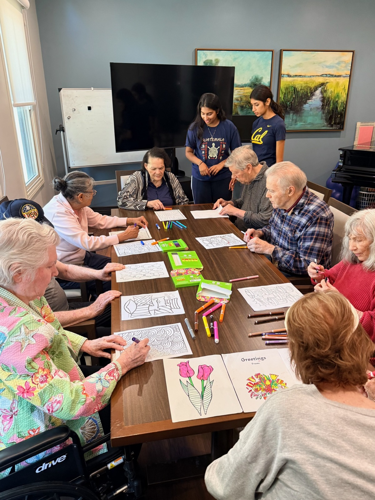
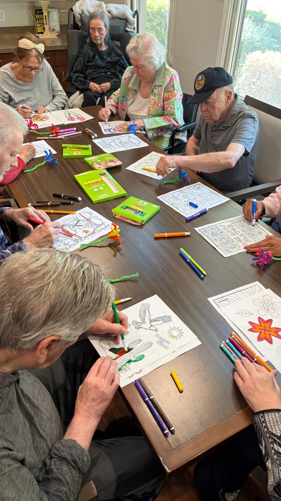
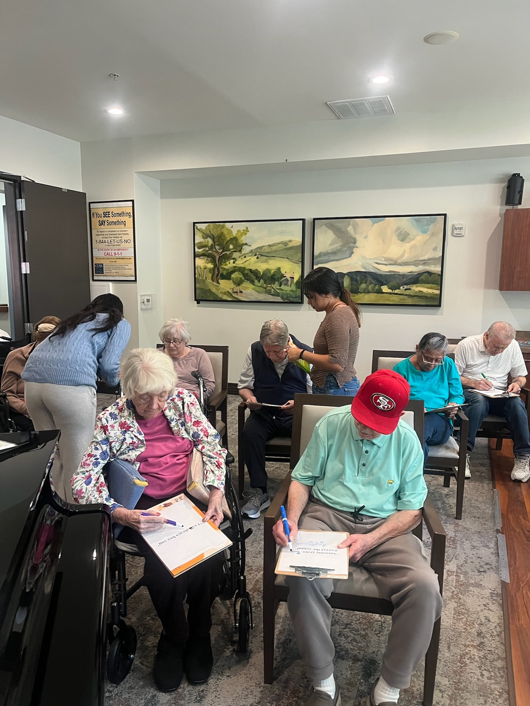
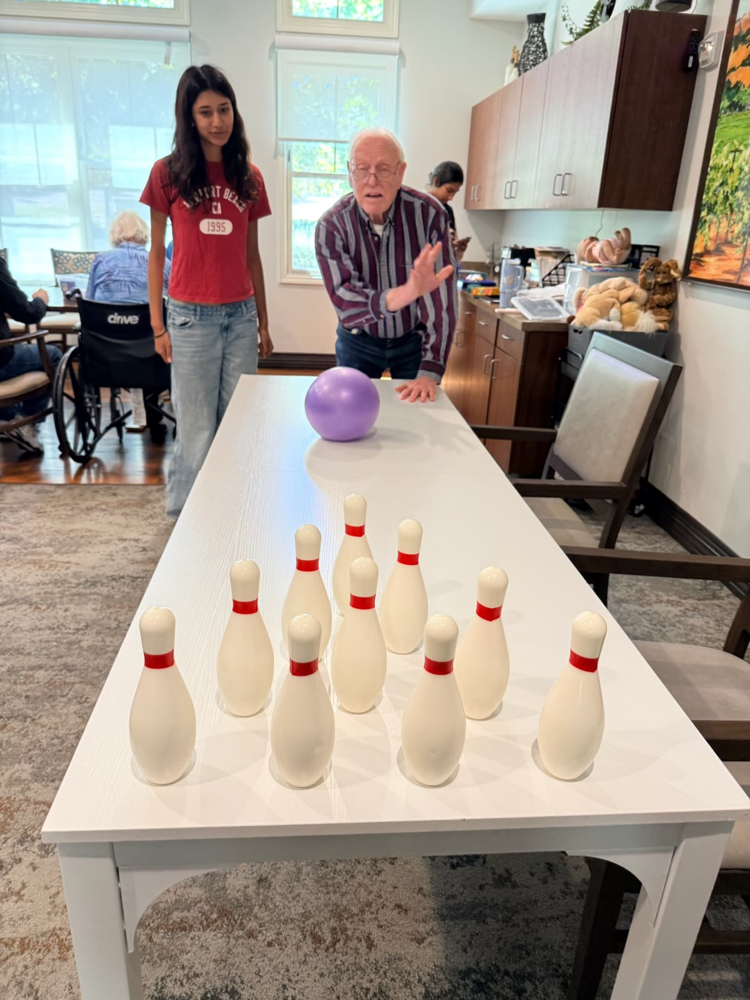
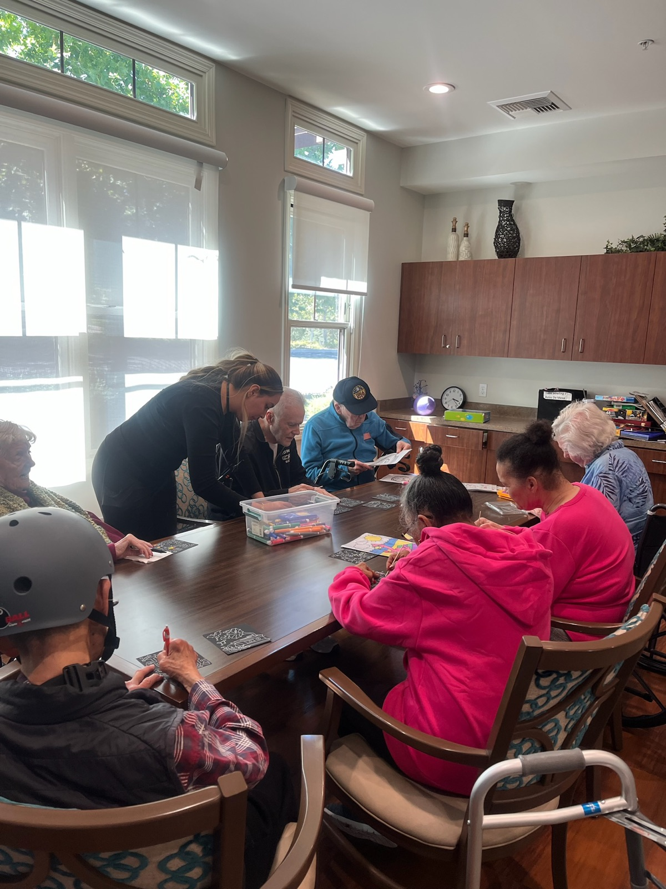

Evidence-based cognitive stimulation for senior communities
Keeping minds active, together.
Thoughts in Mind brings structured, research-backed group workshops, informed by Cognitive Stimulation Therapy (CST), to residents of assisted living and nursing homes. Conversation, creativity, and memory work, delivered on a schedule your residents can count on.
- Grounded in peer-reviewed research
- Facilitators certified in dementia care
- Consistent, structured sessions

"These workshops are not therapy or treatment. They are evidence-based cognitive stimulation designed for prevention and enrichment."
We work to keep brains active, support mental health, and build community. Every session stimulates several cognitive domains at once, while making room for reminiscence, meaningful conversation, and laughter.
Our mission
Three things we work toward in every session
Our mission is to protect cognitive health, reduce isolation, and strengthen the mental sharpness and memory of older adults through engaging activities.
Protect cognitive health
Structured activities that exercise memory, attention, language, and executive function, the domains most affected by aging and dementia.
Reduce isolation
Small groups, familiar faces, and a regular rhythm. Residents come to know each other and to look forward to the next session.
Strengthen sharpness and memory
Reminiscence and person-centered games that let each resident be the expert on their own life, and be heard.
The workshops
Six themes, each built to stimulate several cognitive domains at once
Every workshop pairs a cognitive exercise with an enjoyable, social activity. Residents rotate through the themes so no two weeks feel the same.
Colors & Hands
Creative Making & Collaboration
Words, Wit & Wonder
Language Games & Word Creation
Money, Time & Decision-Making
Planning & Choices
Places & Journeys
Local Maps & World Travel
From Memory Lane
Childhood Games & Storytelling
Music in Motion
Songs, Choreography & Memory
And more in development
We continue to design and refine new sessions every week. Ask us what is coming next.
From our sessions
What a workshop looks like in the room
Real sessions in Tri-Valley assisted living communities. Small groups, hands busy, and conversation flowing.




Research foundation
Why cognitive stimulation
Medication can offer modest gains for some people with dementia, but it does not stop or reverse the disease. Clinical guidelines now recommend pairing it with evidence-based, non-pharmacological programs like structured group cognitive stimulation.
Improves cognition and communication
Multiple randomized controlled trials and systematic reviews show structured group cognitive stimulation can improve cognitive functioning, communication, and quality of life.
Works best as a group
Combining cognitive exercises with enjoyable, person-centered group activities improves engagement and helps maintain psychosocial functioning.
Consistency matters
Research indicates regular, scheduled sessions produce stronger cognitive outcomes than occasional ones. Our program is designed around that finding.
Cognitive domains
What a session exercises
Each session is designed to reach several of these at once, so residents with different strengths all find a way to participate.
- Autobiographical memory
- Semantic memory
- Executive functioning
- Attention
- Language
- Reminiscence
- Meaningful conversation
- Social interaction
How it works
From first email to first session
We keep it simple for activity directors and administrators. Three steps, and your residents have a program they can engage with regularly.
Reach out
Email or call us. We will send a full breakdown of each workshop, what a session looks like, and answer questions about your residents' needs.
Build a schedule
Together we set a consistent cadence, group size, and room. We plan alongside care staff for residents with limited verbal communication or language barriers.
Sessions begin
Our trained facilitators run each workshop in a consistent, structured format, and we keep you informed on how residents are engaging.
Our facilitators
Trained, certified, and here for the long run
Every facilitator completes caregiving and dementia care training before working with residents, so they understand not just the activities but the reasoning behind them.
Noor Dharni
Certified Nursing Assistant. Senior at UC Berkeley, B.A. in Neuroscience and Public Health.
Sehej Dharni
Facilitator. Certified in Introduction to Caregiving and Dementia Care and Management.
Yashita Vijay
Facilitator. Certified in Introduction to Caregiving and Dementia Care and Management.
Bring Thoughts in Mind to your community.
Email or call us and we will send a full breakdown of each workshop, how sessions run, and how we can build a schedule around your residents.